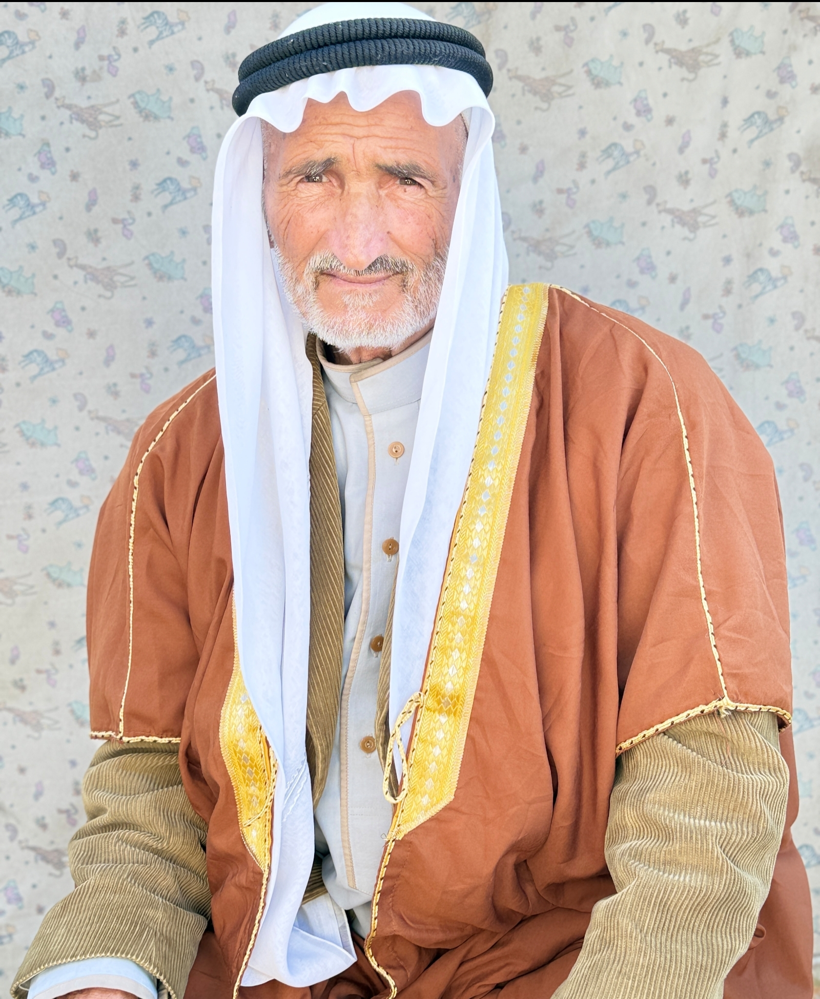
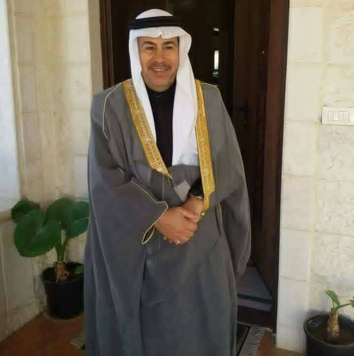

يحتل الوجهاء ورجال الإصلاح مكانة مركزية في النسيج الاجتماعي لعبسان الجديدة، إذ يتولون دورًا تاريخيًا في حل النزاعات وتقريب وجهات النظر بين الناس بعيدًا عن التقاضي الرسمي، اعتمادًا على الأعراف والتقاليد العشائرية المتوارثة جيلًا بعد جيل. هذه الصفحة مخصصة للتعريف بوجهاء البلدة وأبناء الإصلاح فيها تكريمًا لدورهم، وسيتم استكمالها بأسمائهم وصورهم تباعًا.
سيتم إضافة أسماء وصور الوجهاء تباعًا.

